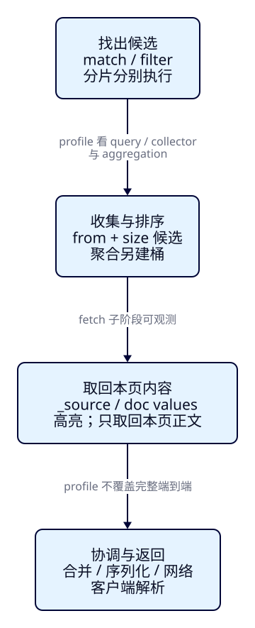
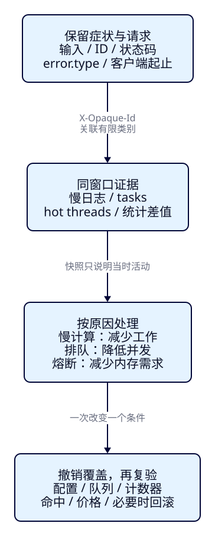

搜索慢了或失败了，
怎样沿证据找到原因？
游客搜索“西湖”，运营又在结果卡片上增加长介绍、高亮和更多统计。结果仍然正确，却有人等待更久，另一些请求直接失败。F43让我们能测量吞吐与延迟；这一课继续问：请求把工作花在哪里，为什么同一个429可能需要完全不同的处理，恢复后又怎样证明搜索仍正确？我们用固定资料逐项改变请求，再采集同一故障窗口的证据，不凭单个耗时或一张CPU截图下结论。
学完能用输出证明什么
- 保持命中集合和排序不变，解释source、doc values、高亮、聚合、分页与分片扇出增加了哪类工作。
- 读懂profile的query、collector、aggregation和fetch，用慢日志、tasks、hot threads与统计补齐其观察范围。
- 区分搜索队列拒绝、request熔断与配置禁止；撤销实验覆盖后，重新核对ID、价格、桶和资源状态。
本课目录
图解跳转：01 · 工作分布 · 02 · 证据与恢复
1. 查到相同十条资料，工作量也会相同吗？
Elasticsearch负责从搜索投影中找候选、排序和分析，并把本页需要的内容取回来。找到十个ID只是其中一部分：返回十篇长介绍需要读数据和传输；高亮还要定位片段；统计每个景点一个桶，会比只显示两种标签保留更多状态。游客只看十张卡片，不能据此断言服务端只处理十份文档。
先用三个动作理解一次搜索。查找判断哪些资料合格；收集保留排序候选和聚合状态；取回读取本页字段、生成高亮。最后协调节点合并并返回，客户端再接收和解析。分布式请求还会扇出到多个分片；这些工作有并行和重叠，不能把各节点耗时简单相加当成游客等待。

诊断需要先写下症状：“同样输入，现在响应字节变大”“单次请求很快，并发时才排队”“HTTP429里出现request内存账本”。这三种情况分别需要检查取回、竞争或内存保护。增加队列、堆或节点之前，先弄清是哪一种工作和限制。
2. 固定6000份资料，保留能核对的搜索契约
本课位于F43容量测量之后，不再建设搜索页面或同步服务。继续用F07观察窗，默认输入“西湖”、HZ、200元、中心30.25/120.15、3km。真实路径仍是浏览器→Java→ES；3000命中，p000001票价61元。观察窗返回20张卡，成本实验只取10条且使用doc values，二者分别按实际DSL核对，不能混用耗时。
固定f44-v1生成器输出p000001至p006000；奇数属于HZ且名称含“西湖 游船”，偶数属于SZ。全部open/CNY，价格为6000＋(编号模20)×100分；summary是重复合成文字，标签固定“亲水/合成”。这不是旅游内容质量或真实热点模型。1主0副的tut-f44-attractions与2主0副的tut-f44-fanout使用相同资料；strict mapping、whitespace分析器、价格long/coerce=false。自动refresh关闭，导入后显式refresh，期间不改文档，排除并发更新对成本对照的干扰。
独立Compose项目es-framework-f44，节点20844、观察窗18094只绑定回环；ES本机无认证，仅放合成资料。容器1CPU/768MiB、堆256MiB、node.processors=1，单节点和同一Docker VM都不是高可用部署。版本ES9.4.0/Lucene10.4.0；应用Boot4.0.8/JDK25.0.4.1+1/官方Java与Rest5 Client9.4.8，ES bundled JVM另从节点读取。准备Docker、Python3.9+、完整JDK25并设置JAVA_HOME/PATH。
cd projects/travel-search
python3 labs/f44/lab.py start --out /tmp/f44-start
cd backend
./mvnw -B -ntp clean package dependency:build-classpath -Dmdep.outputFile=target/f44-classpath.txt
cd ..
bash labs/f44/java.sh compile
python3 labs/f44/lab.py run --out /tmp/f44-round1run要求本课两个索引不存在；首次创建与清理后重做都走created路径。脚本保存语料哈希，并另外扫描两份索引逐文档比较全部_source，不能只用count=6000证明内容相同。实验入口给出完整文件和观察窗启动方式。
完整mapping、节点配置与语料规则
{
"settings": {"number_of_shards": 1, "number_of_replicas": 0, "refresh_interval": "-1"},
"mappings": {
"dynamic": "strict",
"properties": {
"attraction_id": {"type": "keyword"},
"name": {"type": "text", "analyzer": "whitespace"},
"summary": {"type": "text", "analyzer": "whitespace"},
"city_code": {"type": "keyword"},
"currency": {"type": "keyword"},
"status": {"type": "keyword"},
"tags": {"type": "keyword"},
"ticket_price_fen": {"type": "long", "coerce": false},
"location": {"type": "geo_point"}
}
}
}name: es-framework-f44
services:
es:
image: docker.elastic.co/elasticsearch/elasticsearch:9.4.0@sha256:754c3d8ca6f74acba58eb0610b8479a13c36df09ac1a4e0f2667dc167d377b84
mem_limit: 768m
cpus: 1.0
environment:
cluster.name: travel-f44-lab
node.name: f44-es
node.processors: 1
discovery.type: single-node
xpack.security.enabled: "false"
xpack.ml.enabled: "false"
ES_JAVA_OPTS: -Xms256m -Xmx256m
ports: ["127.0.0.1:20844:9200"]
volumes: [es-data:/usr/share/elasticsearch/data]
volumes:
es-data:def corpus():
for i in range(1, 6001):
yield {'attraction_id': f'p{i:06d}', 'name': ('西湖 游船' if i % 2 else '山水 公园') + f' 样本 {i:06d}',
'summary': '西湖 游船 亲水 合成旅游资料 ' * 160, 'city_code': 'HZ' if i % 2 else 'SZ',
'currency': 'CNY', 'status': 'open', 'tags': ['亲水', '合成'],
'ticket_price_fen': 6000 + (i % 20)*100, 'location': {'lat': 30.25, 'lon': 120.15}}
3. c01：保持命中相同，每次增加一种工作
基础请求应精确命中3000条，首页为p000001、p000003，直到p000019，按稳定业务ID升序。这里按字段排序，没有要求_score，ES可以省去不需要的评分；profile里出现ConstantScore或score_count=0并不表示match没执行。先核对以下完整请求，再讨论成本。
{
"size": 10,
"track_total_hits": true,
"_source": false,
"docvalue_fields": ["attraction_id", "ticket_price_fen", "city_code"],
"query": {
"bool": {
"must": [{"match": {"name": "西湖"}}],
"filter": [
{"term": {"city_code": "HZ"}},
{"term": {"status": "open"}}
]
}
},
"sort": [{"attraction_id": "asc"}]
}curl -sS -H 'Content-Type: application/json' 'http://127.0.0.1:20844/tut-f44-attractions/_search?request_cache=false&allow_partial_search_results=false' -d @search/f44/base.json每组连续执行3次普通请求，另执行1次profile并单独保存。比较列出客户端单调时钟、ES的took和未压缩响应字节；不把profile混入普通延迟，也不从三个样本计算“稳定p95”。固定顺序、首次加载、JIT、同宿主竞争都没有隔离，因此下面首先证明结果与工作类型，不宣称稳定提速倍数。
窄屏可左右滑动表格。
| 单项变化 | 命中与输出 | 新增或改变的工作 |
|---|---|---|
| docvalue_fields，_source=false | 10条ID/价格/城市，fields值为数组 | 从支持doc values的列式字段取值 |
| _source=true | 相同10条，额外返回全部原始JSON | 源数据读取与更大响应 |
| _source选三个字段 | 相同10条，小JSON | 减少返回内容；不等于不用加载、解析原始_source |
| summary高亮 | 相同10条，出现西湖片段 | 在本课无offset/term vector配置下分析文本、生成片段 |
| tags聚合2桶 | 亲水/合成各3000 | 匹配集合上的聚合收集，不局限首页 |
| ID聚合1000桶 | 1000个单文档桶，其他2000项 | 更多桶状态与返回数据；不是完整3000桶 |
本课保留docvalue_fields不变，只改变_source或增添功能，因此_source过滤的响应中也保留fields，便于对照。正式两轮的实际响应字节与耗时范围如下；字节差主要来自返回内容，took的数字位数也会带来少量变化。
| 条件 | 响应字节范围 轮1 / 轮2 | 客户端ms范围 轮1 / 轮2 |
|---|---|---|
| doc values | 1822–1822 / 1822–1822 | 6.1–10.4 / 3.6–4.4 |
| 完整_source | 68302–68302 / 68302–68302 | 5.1–6.6 / 3.9–4.7 |
| 过滤_source | 2612–2613 / 2612–2612 | 6.5–42.8 / 3.4–7.2 |
| 加summary高亮 | 3732–3733 / 3732–3733 | 9.6–49.8 / 9.2–92.7 |
| 加2标签桶 | 1984–1985 / 1984–1985 | 3.9–68.5 / 6.3–54.1 |
| 加1000景点桶 | 33921–33922 / 33921–33922 | 10.8–74.2 / 12.3–56.5 |
| from=2000 | 1822–1823 / 1822–1822 | 5.7–47.2 / 5.5–45.0 |
source filtering与doc values解决的是不同层面的问题。过滤_source能缩小输出，但源JSON按整体存储，选一个字段仍可能需要加载、解析整份源。docvalue_fields可按列读取keyword/数值等字段；它不能替你重建原始JSON或返回text长文。不要为省取回开销给summary开启fielddata：那会引入另一类堆内存工作。官方字段取回说明解释了这一区别。
高亮也不因_source=false就消失：该参数控制响应是否含_source，不禁止高亮内部读取文本。脚本在基础请求上添加下面的完整highlight配置，其余字段不变。require_field_match=false是为了让name中的“西湖”也在summary里标亮，是本课显式选择，不是默认行为。
{
"highlight": {
"require_field_match": false,
"fields": {
"summary": {"fragment_size": 50, "number_of_fragments": 1}
}
}
}4. profile怎样帮助定位，又漏掉了什么？
在完整_search请求顶层加入"profile":true。响应按实际分片分组：searches[].query是查询执行树，searches[].collector描述排序、计数等收集器，aggregations解释聚合工作，fetch含字段取回、高亮等子阶段。先按分片看哪类工作突出，再展开对应breakdown和children，避免一开始就被大量纳秒数字淹没。
树的父级时间包含子级工作；collector与query也有嵌套计时，不能把所有time_in_nanos相加。breakdown中的next_doc_count、score_count是调用次数，不是耗时；纳秒需要除以1000000才得到毫秒。某一分片的热点也不能直接代表所有分片。
bash labs/f44/java.sh search/f44/base.json profile下面是首轮真实响应的压缩摘录，保留节点类型与取回子阶段，省略数值计时和嵌套细节；完整响应保存在运行记录。高亮对照的fetch中可见HighlightPhase，ID聚合对照有独立聚合树。字段名随版本变化，按9.4.0实际响应阅读。
{
"profile": {
"shards": [
{
"index": "tut-f44-attractions",
"searches": [
{
"query": [
{
"type": "ConstantScoreQuery",
"breakdown": {
"score_count": 0
}
}
],
"collector": [
{
"name": "QueryPhaseCollector",
"children": [
{
"name": "SimpleFieldCollector"
}
]
}
]
}
],
"fetch": {
"type": "fetch",
"debug": {
"stored_fields": [
"_id",
"_routing"
]
},
"children": [
{
"type": "FetchDocValuesPhase"
},
{
"type": "FetchFieldsPhase"
},
{
"type": "StoredFieldsPhase"
}
]
}
}
]
}
}Profile官方说明明确它有显著测量开销，且不覆盖网络、队列等待和协调节点的结果合并等工作。它不是一套可以与took逐项对账的完整时间账本。某个profile很快、客户端却等很久时，应继续检查连接、排队与协调，不能因此认定ES之外一定有问题。
5. 分页、扇出与缓存：少返回，不一定少工作
from=2000,size=10跳过前2000条，返回p004001至p004019的奇数ID。通常各片需要为from+size收集候选，再由协调端截取本页；实际收集还受命中数与优化影响。前面2000篇的正文并不因此全部fetch回来，但排序候选工作仍可能增加。只有小工作集时，这组普通耗时未必比首页更大；这不推翻深分页的一般成本。官方分页说明提醒避免过深from/size。
本课还把from改10000、size仍10，真实返回400：超过默认max_result_window=10000。它是窗口保护，不是429熔断；直接抬高窗口会扩大被允许的请求工作。顺序翻页可以沿用F11的PIT+search_after：复制上一页最后一条完整sort数组，保持query/sort不变，采用最新pit_id，并及时关闭。
为了独立核对第2001条，本课先在同一个PIT里用from=1999,size=1取一个深锚点，再用完整sort得到相同的p004001页。深锚点本身仍付出from成本，这不是免费随机跳页，也没有拿两步总时间冒充顺序翻页收益。正常产品流程应从前页延续游标。PIT还保留旧搜索视图与相关资源，不是无限期免费；脚本记录open_contexts并在finally关闭。
before = stats()
pit = api('POST', '/' + MAIN + '/_pit?keep_alive=1m')['body']['id']
try:
anchor_body = dict(base, size=1, **{'from': 1999}, pit={'id': pit, 'keep_alive': '1m'})
anchor = api('POST', '/_search?request_cache=false', anchor_body)['body']
pit = anchor.get('pit_id', pit)
cursor = anchor['hits']['hits'][-1]['sort']
page = api('POST', '/_search?request_cache=false', dict(base, search_after=cursor, pit={'id': pit, 'keep_alive': '1m'}))['body']
pit = page.get('pit_id', pit)
assert ids(page) == result['deep-2000']['ids']
during = stats()
result['pit'] = {'anchor_cursor': cursor, 'next_ids': ids(page), 'before': before, 'during': during}
finally:
api('DELETE', '/_pit', {'id': pit})
result['pit']['after'] = stats()
contexts = lambda s: sum(n['indices']['search']['open_contexts'] for n in s['nodes'].values())
assert contexts(during) > contexts(before) and contexts(result['pit']['after']) == contexts(before)同一资料改成2主分片后，首页ID仍相同，_shards.total与profile分片数都从1变2。只有一个节点，没有增加CPU或磁盘；多片意味着更多局部执行、调度与合并机会，也可能适用于别的并行布局，不能从这个计数承诺更快。
缓存需要区分对象。文件系统缓存复用底层数据页；节点查询缓存可能复用符合条件的filter结果，不保证每个filter都会缓存；分片请求缓存复用局部请求结果。成本比较显式request_cache=false，仍没有关闭其他缓存。单独的size=0聚合实验打开request_cache，三次相同请求得到两次新增hit；profile请求不走这条缓存。refresh取得数据变化或mapping变化会使相关条目失效，频繁改价与刷新会降低可复用机会。命中缓存不能证明原始请求本身便宜。官方请求缓存说明与固定版本canCache源码见本课依据。
6. c02：把工具放进同一个受控窗口
运营说“刚才很慢”时，事后空闲的hot threads说明不了刚才发生了什么。本课在隔离节点上重启一个临时覆盖：search只有1个工作线程、队列只有1个位置。随后并发发出4条有限CPU脚本请求。脚本给每份HZ资料反复求平方根，只用来制造能被观察的计算窗口，不是旅游排序策略；没有无限任务或自然流量假设。
# Only c02: make the search queue deliberately small, then remove this override.
services:
es:
environment:
thread_pool.search.size: 1
thread_pool.search.queue_size: 1{
"size": 10,
"track_total_hits": true,
"_source": false,
"query": {
"script_score": {
"query": {"term": {"city_code": "HZ"}},
"script": {
"source": "double v=doc['ticket_price_fen'].value; for(int i=0;i<params.loops;i++){v=Math.sqrt(v+params.offset);} return v;",
"params": {"loops": 20000, "offset": 1.01}
}
}
}
}窗口开始前记录node ID、UTC边界与累计计数器；请求携带有限类别X-Opaque-Id: f44-diagnose。这个标记同时出现在tasks和慢日志，但不是每个请求独有的追踪ID。生产中不应无节制生成不同值；需要逐次分布式追踪时另用traceparent。官方HTTP关联约定解释了两者用途。
脚本只为本课索引把query/fetch慢日志warn阈值临时设0ms，确保捕获有限样本。0ms是学习用的观察设置，不代表正常慢查询标准。日志可以包含查询内容，实际环境应先考虑数据范围与日志量。固定Docker镜像把ECS慢日志写Console，因此这里从docker logs取证，不假设logs目录一定存在文件。
PUT /tut-f44-attractions/_settings
{
"index.search.slowlog.threshold.query.warn": "0ms",
"index.search.slowlog.threshold.fetch.warn": "0ms"
}GET /_tasks?detailed=true&actions=indices:data/read/search*
GET /_nodes/hot_threads?threads=3&interval=200ms&snapshots=3
GET /_nodes/stats/jvm,process,thread_pool,breaker,indices慢日志是分片级query/fetch阶段的记录，不是浏览器端到端耗时。tasks是当时还存在的操作，完成后通常就消失；任务数不等于HTTP请求数。hot threads提供活动线程栈的采样，不直接告诉你某个task正在那个线程上。统计则提供瞬时queue/active与累计completed/rejected、GC、breaker等；本课统计窗口包含一条1-loop预热与诊断采样，不作纯4请求耗时账本。差值必须来自同一节点进程、同一窗口，重启前后不能相减。慢日志设置和任务积压诊断提供各工具的边界。

7. 看到429，先定位拒绝发生在哪里
同一个搜索HTTP会派生查询和取回等工作。这个刻意缩小的队列既可能拒绝query任务，也可能让已经完成query的请求在fetch阶段失败；不能只检查最外层error.type。脚本显式allow_partial_search_results=false，不把缺片的结果当完整成功。4个请求不是4份文档，也不一定刚好对应4个线程池任务。
| 轮次 | HTTP200 / 429 | 采样active / queue | search.rejected差 |
|---|---|---|---|
| run-01 | 1 / 3 | 1 / 1 | 3 |
| run-02 | 1 / 3 | 1 / 1 | 3 |
同窗口tasks带有f44-diagnose标记，hot threads能看到搜索与脚本计算活动，search.rejected前后差与响应中的es_rejected_execution_exception相互支持。它们共同解释“有限CPU工作让小队列拒绝”，不是只凭CPU高就给出根因，也不声称测到了生产容量阈值。
先停止这组人为负载，关闭慢日志；然后移除limited.yaml覆盖、重启原卷并等待本课分片green，再重新发送基础请求。只等根端口200不足以保证分片已恢复。恢复后同cluster UUID、正常线程池配置、首页ID和价格都再核对。重启会重置进程计数器，所以恢复后的累计值不与重启前相减。
现场治理要减少进入的工作：降低并发、限制昂贵功能、缩小批次，确属瞬时拒绝时才有限退避。增加队列只会允许更多工作等待，不会增加处理能力；无限重试还会放大流量。F43的indexing_pressure拒绝是另一类写入压力账本，F40还有Bulk条级失败和未知确认；这些都不能仅按429统一重放。
8. c03：内存保护与配置禁止，需要不同修复
聚合需要为桶和内部数组记账。request circuit breaker是请求相关内存保护的一部分，parent还检查更广范围；它们没有追踪所有内存，也不是已经OOM才报错。本课临时把request限额压到1kb，再执行1000个景点桶的聚合。这个人为小限额让真实ES明确拒绝，不能据此推导正常堆容量或推荐把生产限额提高。
{
"size": 0,
"track_total_hits": true,
"query": {"term": {"city_code": "HZ"}},
"aggs": {"places": {"terms": {"field": "attraction_id", "size": 1000}}}
}PUT /_cluster/settings
{"transient":{"indices.breaker.request.limit":"1kb"}}
POST /tut-f44-attractions/_search?request_cache=false&allow_partial_search_results=false
{
"size": 0,
"track_total_hits": true,
"query": {"term":{"city_code":"HZ"}},
"aggs": {"places":{"terms":{"field":"attraction_id","size":1000}}}
}
PUT /_cluster/settings
{"transient":{"indices.breaker.request.limit":null}}REST与Java都得到429，响应内部含circuit_breaking_exception及request账本/字节限额；节点request.tripped增加。与c02不同，这次不要求search.rejected增加才能证明故障。撤销覆盖后，相同聚合200，返回1000个桶、sum_other_doc_count=2000。业务上如果只需要两个标签，就应换成tags聚合；只有确需完整高基数结果时才设计分页聚合等方案，而不是返回一个巨大terms结果。
另一个反例是运行配置禁止。设search.allow_expensive_queries=false后，script_score真实返回400并说明配置原因；基础match/filter仍200。这不是同一次内存熔断，也不应靠持续重试修复。本课撤销设置以恢复实验前提；实际服务应先判断此类脚本是否符合既定限制。
PUT /_cluster/settings
{"transient":{"search.allow_expensive_queries":false}}
POST /tut-f44-attractions/_search
{
"size": 1,
"query": {
"script_score": {
"query": {"term":{"city_code":"HZ"}},
"script": {"source":"return doc['ticket_price_fen'].value;"}
}
}
}
PUT /_cluster/settings
{"transient":{"search.allow_expensive_queries":null}}上面简化脚本保留相同禁止原因；正式脚本重放slow.json的完整查询。拒绝请求诊断与熔断诊断说明了为何必须同时保留类型、内部原因和统计。
9. Java要保存原因，不能把所有失败变成空列表
独立Java练习复用现有连接配置和官方客户端，读取同一JSON构造SearchRequest，显式关闭请求缓存、禁止部分结果；profile由单独参数控制。完整响应、客户端时间与异常树保留下来，便于与REST对照。状态429只决定“需要继续分类”，不自动决定重试；传输异常也不等于确定未执行。下面是完整文件，没有给简单运维操作新增Controller或页面。
import co.elastic.clients.elasticsearch._types.ElasticsearchException;
import co.elastic.clients.elasticsearch.core.SearchRequest;
import co.elastic.clients.json.JsonData;
import co.elastic.clients.json.JsonpUtils;
import dev.esweb.travel.EsConfiguration;
import java.io.IOException;
import java.io.StringReader;
import java.nio.file.Files;
import java.nio.file.Path;
import java.util.LinkedHashMap;
import tools.jackson.databind.json.JsonMapper;
/** One bounded diagnostic request; the lesson owns this local endpoint/index. */
public class F44Search {
public static void main(String[] args) throws Exception {
var json = JsonMapper.builder().build();
var result = new LinkedHashMap<String,Object>();
var body = Files.readString(Path.of(args[0]));
boolean profile = args.length > 1 && args[1].equals("profile");
try (var connection = EsConfiguration.connect("http://127.0.0.1:20844", "", "")) {
var es = connection.withTransportOptions(o -> o.addHeader("X-Opaque-Id", "f44-java"));
var request = new SearchRequest.Builder().index("tut-f44-attractions")
.allowPartialSearchResults(false).requestCache(false)
.withJson(new StringReader(body)).profile(profile).build();
result.put("request", json.readTree(JsonpUtils.toJsonString(request, es._jsonpMapper())));
long start = System.nanoTime();
try {
var reply = es.search(request, JsonData.class);
if (reply.timedOut() || reply.shards().failed().intValue() != 0) {
throw new IllegalStateException("Incomplete search response");
}
result.put("status", 200);
result.put("reply", json.readTree(JsonpUtils.toJsonString(reply, es._jsonpMapper())));
} catch (ElasticsearchException e) {
result.put("status", e.status());
result.put("type", e.error().type());
result.put("reason", e.error().reason());
result.put("error", json.readTree(JsonpUtils.toJsonString(e.error(), es._jsonpMapper())));
// Preserve the cause. A 429 alone does not identify its mechanism.
} catch (IOException e) {
result.put("status", "transport_error");
result.put("reason", e.getMessage());
// No blind retry: the caller must first identify the failure.
}
result.put("client_ms", (System.nanoTime() - start) / 1e6);
}
System.out.println(json.writeValueAsString(result));
}
}Boot工程实际构建与Java实连分别记录。观察窗使用原有搜索契约核对3000命中、20张卡及p000001的61元，并以返回esRequest做REST重放。profile实验和受控故障保留在独立练习中，读者不用修改前端，也不把带诊断信息的大响应作为游客界面设计。
本课机制的固定版本依据
- SearchSlowLog.java · onQueryPhase/onFetchPhase：分片阶段与X-Opaque-Id日志字段。
- FetchProfiler.java：fetch内的字段加载与子阶段计时。
- IndicesService.java · canCache：profile不使用分片请求缓存，以及size/request_cache的条件。
这些入口解释本课现象；没有展开源码篇，也没有把当前在线文档的新选项全部当作9.4.0能力。实际运行记录保留本课版本与响应。
10. 清理、重做，再留下可解释的结论
cleanup只点名删除本课两个索引，确认404，撤销两个transient设置并恢复正常Compose；保留具名卷。run必须使用新的out目录。PIT在正常流程finally关闭，慢日志随本课索引清理消失；中断后执行cleanup，停止诊断负载再重做。观察窗另开终端时用Ctrl-C退出Java。down不带-v，不清理已有其他课程或9201安全节点。
python3 labs/f44/lab.py cleanup --out /tmp/f44-cleanup1
python3 labs/f44/lab.py run --out /tmp/f44-round2
python3 labs/f44/lab.py cleanup --out /tmp/f44-cleanup2
python3 labs/f44/lab.py down --out /tmp/f44-down两轮都通过请求语义、真实错误与恢复检查，不能据此声称生产排队或自然熔断已经复现。没有测试跨机器网络、长稳态、真实热点、自动取消、生产SLO或自然内存耗尽。本课的短普通样本只用于观察差异，不做容量承诺。最终报告应把“观察到什么”“由哪些证据支持”“还不知道什么”分别写清。
F45会把已学机制交给一个新样本和需求，让读者从空环境独立完成搜索、同步故障与恢复，再带着具体问题进入源码篇。本课不提前实施那份结业任务。
能力检查：先回答，再展开
1. _source过滤后的响应很小，能证明没读取长介绍吗？
不能。过滤_source主要减少输出，仍可能加载和解析整份源。若只需要支持doc values的少量字段，可用_source=false配合docvalue_fields，并核对fields里的数组。高亮又可能在内部读取文本。
2. 能把query树各节点、collector和fetch时间全部相加成took吗？
不能。父子和收集过程存在嵌套，多片又有并行；profile本身有开销，也没有完整覆盖排队、网络与协调合并。应按工作类型和分片找热点，再用其他证据补齐。
3. from=2000只返回十条，为什么仍可能比首页贵？
取回的正文仍主要是本页，但各片候选窗口随from+size扩大。应区分候选收集与正文fetch。小工作集没有稳定延迟差也不能外推大语料。
4. 本课PIT锚点能直接做免费随机跳页吗？
不能。from=1999取锚点仍有深分页成本；它只是独立验证目标页。顺序翻页应传前页完整sort、最新PIT ID，保持query/sort并及时关闭。
5. 搜索429后，应该先增加队列还是重试？
先保存完整error和同窗口证据。es_rejected_execution_exception提示某工作被拒绝；request circuit_breaking_exception指向内存账本；写入压力又是另一机制。先减少对应工作或恢复错误配置，瞬时拒绝才考虑有限退避。
6. 重启恢复后，rejected变小了，可以说拒绝率降低了吗？
不能用重启前后累计值做差。进程计数器已重置；应分别记窗口，核对恢复后的配置、请求成功与当前资源。
7. tasks为空、hot threads空闲，能否排除十分钟前的慢查询？
不能。它们是当前活动采样。应在症状仍存在时采集，并用当时请求、慢日志、时间边界和统计连接证据；也不能将线程栈直接当作某个task的唯一身份。
8. 三次相同聚合两次缓存命中，说明什么？
说明本课无更新期间的size0相同请求发生复用。不能证明查询本身廉价，也不能保证频繁改价/refresh后仍命中。profile请求另有不缓存条件。
实际陷阱
速记
窄屏可左右滑动表格。
| 症状 | 先看什么 | 怎样证明恢复 |
|---|---|---|
| 单请求贵 | 返回字段/字节、profile工作树、分片慢日志 | 改变一项工作后，命中/排序相同；耗时范围有条件 |
| 并发才慢或拒绝 | 同窗口tasks/hot threads/queue/rejected及完整错误 | 停止额外负载、恢复队列配置，正常请求和资源恢复 |
| 聚合熔断 | 内部circuit_breaking_exception、request.tripped/字节 | 减少桶/需求或恢复错误限额，正确桶和请求成功 |
| 配置不允许 | 400原因、有效settings | 按既定限制修改查询或撤销实验设置；不盲重试 |
心法：先把请求、时间边界和原因对齐，再用同一搜索契约证明修复有效。